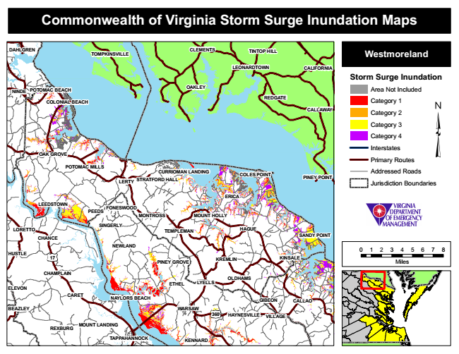

Commonwealth of Virginia Storm Surge Inundation Maps
DAHLGREN
TOMPKINSVILLE
CLEMENTS
TINTOP HILL
Westmoreland
LEONARDTOWN
CALIFORNIA
Storm Surge Inundation
NINDE
POTOMAC BEACH
OAKLEY
Area Not Included
Category 1
CALLAWAY
Category 2
Category 3
Category 4
Interstates
Primary Routes POTOMAC MILLS
Addressed Roads
LERTY
PINEY POINT
Jurisdiction Boundaries
SINGERLY
TEMPLEMAN
HAGUE
SANDY POINT
0 1 2 3 4 5 6 7 8
PINEY GROVE
Miles
ETHEL
NAYLORS BEACH
WARSAW
MOUNT LANDING
REDGATE COLONIAL BEACH
OAK GROVE
CURRIOMAN LANDING
LEEDSTOWN
FONESWOOD
17
CHAMPLAIN
360
VILLAGE
REXBURG
COLES POINT STRATFORD HALL
TAPPAHANNOCK
ERICA
CARET
PEEDS
MONTROSS
MOUNT HOLLY
LORETTO
CHANCE
NEWLAND HUSTLE
KREMLIN
GIBEON
CALLAO
HAYNESVILLE
KINSALE
KENNARD
OLDHAMS LYELLS ELEVON
BEAZLEY